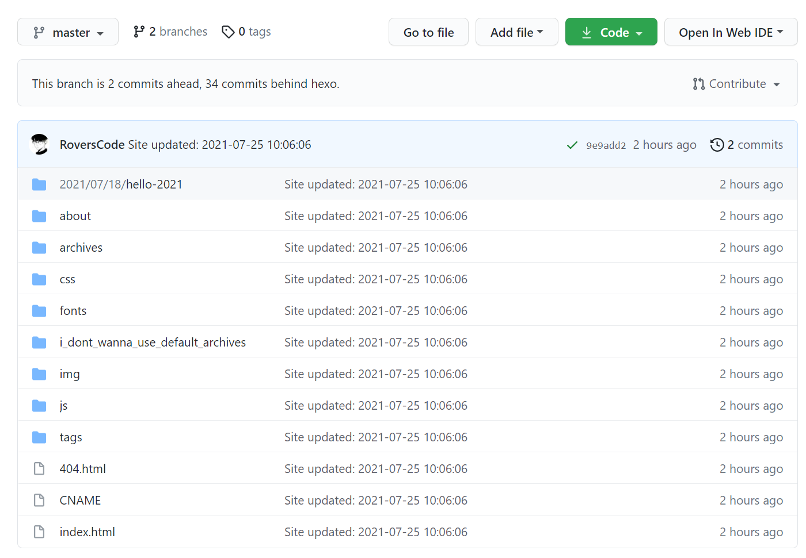
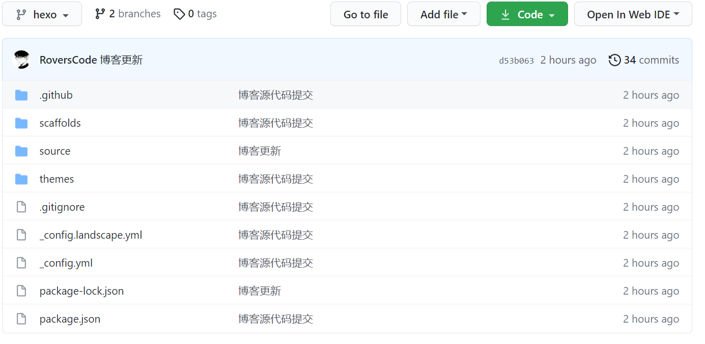

hexo多台电脑更新博客
“You can do it!”
前言
正值暑期，回家后，用多了台式机。便想着，如何既能在笔记本上更新博客，也能在台式机上更新博客。且互不冲突。
在查阅了相关资料后，有了这篇文章。在此做个记录和分享。
阅读该文章的前提条件：会hexo，git以及github的基本使用。
文章符号说明:
1. [xxx]，表示xxx是变量，可以自己取
正文
-
首先需要一个用hexo搭建好的博客。如图所示

-
我们的目的是，能在不同的电脑更新hexo博客。也就是说，你既可以在公司电脑更新，也可以在家里的电脑更新。基于这样的目的，容易想到，这两台电脑需要共同维护管理源代码。显然，Github，这样一个代码管理平台，完全满足了我们的需求。
-
在博客的仓库，创建新分支[hexo]，并将其设置为默认分支。

-
我们需要下载Git，克隆博客的仓库至本地。如
1
git clone [你的博客https地址]
-
将hexo分支中的文件清除干净，把博客的源文件复制进hexo所在的目录。
1
2添加追踪文件:git add .
提交: git commit -a -m "[提交信息]"
-
推送至远程仓库，也就是推送到github的博客仓库中
1
git push origin [hexo] ，这里hexo要填写你在github创建的分支名
如果以上都完成了，可以在github的仓库中明显看到两个分支的不同。
-
| master分支情况 | hexo分支情况 |
|  |  |
- 至此，工作就都完成了。要注意的是，以后若在不同的电脑写博客之前，最好先git pull拉取远程仓库内容合并到当前本地的分支。然后再正常的追踪新博客文件，提交。最后hexo三部曲：hexo clean, hexo g, hexo d。
参考
后记
上述内容，是基于读者已有基本的Git，hexo还有Github知识的。若读者并不了解Git，可以尝试的学习后，在来阅读此文章。
有问题的可以在下方评论，或者邮箱联系我。我的邮箱：1059885524@qq.com
——Rover，2020.7.25